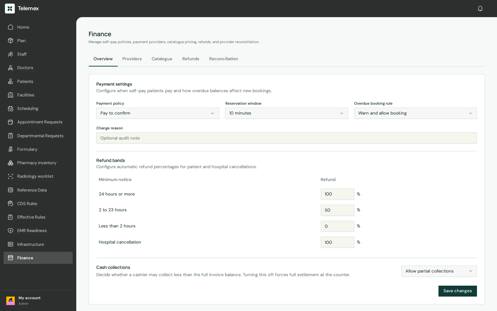

Governance
A record your hospital
can account for.
Every chart action, order, result, dispense, payment and export is designed to leave a clear operational trail, attributable to a person, a section and a moment.

Access history is a record of care, not a compliance afterthought.
The four controls
Governed by design,
not by policy alone.
Access, audit, consent and offline work are platform behaviours. They are enforced by the system, then described in the contract.
Role and ownership controls
Admin, clinical, laboratory, pharmacy and patient access enforced by role, assignment and feature policy.
Append-only audit
Views, creates, updates, deletes and exports attributable to an actor, section, device time and sync time.
Consent-gated portability
Patient data-sharing consent governs exports, with revocation and expiring access to shared summaries.
Safe offline charting
Selected clinical modules continue offline with idempotent writes, explicit conflict handling and server re-validation.
Audit
Every action
leaves a line.
The audit record is append-only. Entries are attributed to a person, a section and a time, and exports are recorded as events in their own right.
- 01Access is visibleWho opened which chart, in which department, and when.
- 02Changes are attributableClinical edits, overrides and amendments carry an actor and a reason where required.
- 03Exports are eventsA shared summary appears in the history like any other action.
- Dr. AminaViewed chart · consultation
- NursingRecorded observations
- Dr. AminaSigned assessment · I20.9
- L. OkoroVerified result · full blood count
- FinanceIssued invoice · INV-2291
- AdminExported summary · consent verified
Product screenshot · demo dataNo entry edited or removed
Offline
Care does not pause
for signal.
Selected doctor-side chart modules continue when connectivity does not. Writes keep their idempotency keys, conflicts are handled explicitly, and the server re-validates on reconnect.
- 01Idempotent writesThe same note cannot be recorded twice because a device reconnected twice.
- 02Explicit conflict handlingWhere two versions exist, the resolution is visible rather than silent.
- 03Server re-validationClinical decision support runs again when the record reaches the server.
Honesty
What we do
not claim.
A governance page is only useful if it is specific. These are the boundaries we hold to in writing and in the product.
Certification badges
Telemex does not present HIPAA, SOC 2, ISO 15189, CLIA or HITRUST certification on this site. Certification status is discussed directly, per deployment, with the evidence that exists.
Complete hospital coverage
Hospital and Laboratory are available now. Inpatient, radiology, managed imaging, HMO and pharmacy are on the roadmap and labelled as such.
Automated clinical decisions
Telemex records, orders and checks. It does not diagnose, prescribe independently or replace clinical judgement.
Customer names we cannot show
No logos, metrics or testimonials appear on this site without written permission and a real deployment behind them.
Bring your governance
questions.
Retention, roles, export, offline behaviour, deployment separation. We would rather answer them before a contract than after.